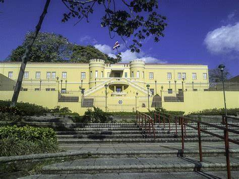
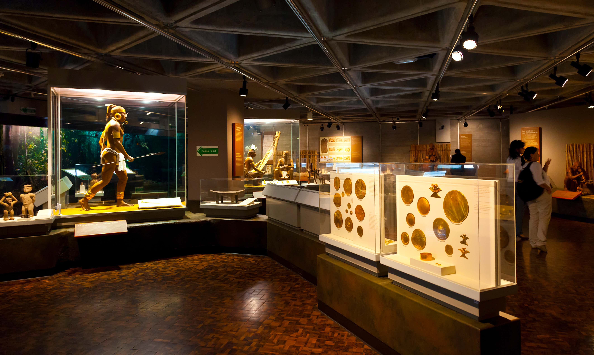
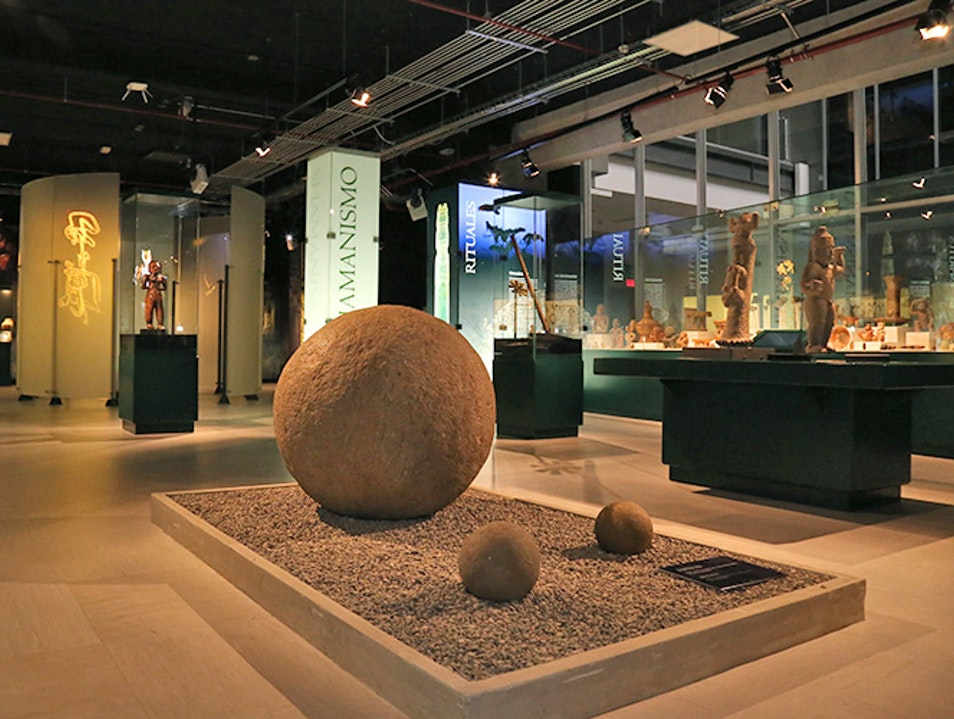

HOME

National Museum of Costa Rica
Housed in a former army headquarters, this museum features exhibits on Costa Rican history, culture, and archaeology.
Location

Pre-Columbian Gold Museum
Part of the Central Bank Museum, this museum displays an impressive collection of ancient gold artifacts.
Location

Jade Museum
This museum showcases a collection of jade artifacts and offers insights into pre-Columbian cultures.
Location